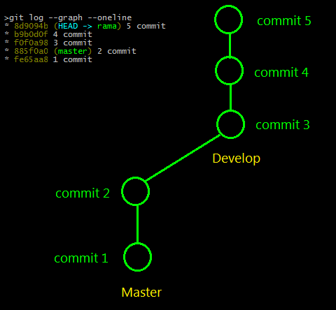
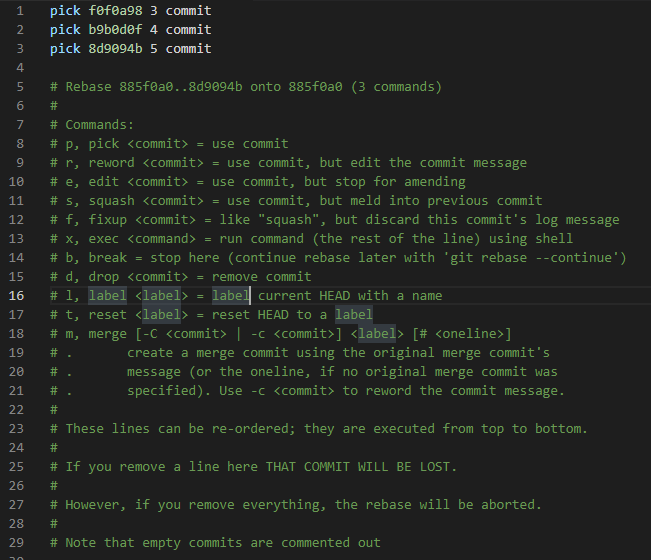
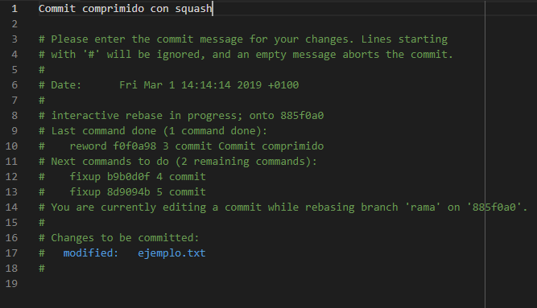
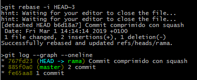

Se utiliza para
Imaginemos que partimos de la siguiente situación:

Nos ponemos en la rama y ponemos el siguiente comando:
Se nos abrirá el editor de texto que tengamos por defecto configurado en git (mirar la configuración de git). y nos saldrá los 3 últimos commits:

Tenemos que usar unos de los commits para hacer un commit que comprima todo, este commit lo marcaremos con "
Cuando guardemos y cerremos se nos abrirá a continuación un mensaje de commit donde ponemos el mensaje que queramos para el nuevo commit:
Una vez que hemos hecho el squash nos saldrá el siguiente gráfico en el que podemos ver como solo tenemos 2 commits ya que hemos comprimido 3 commits en uno solo:
